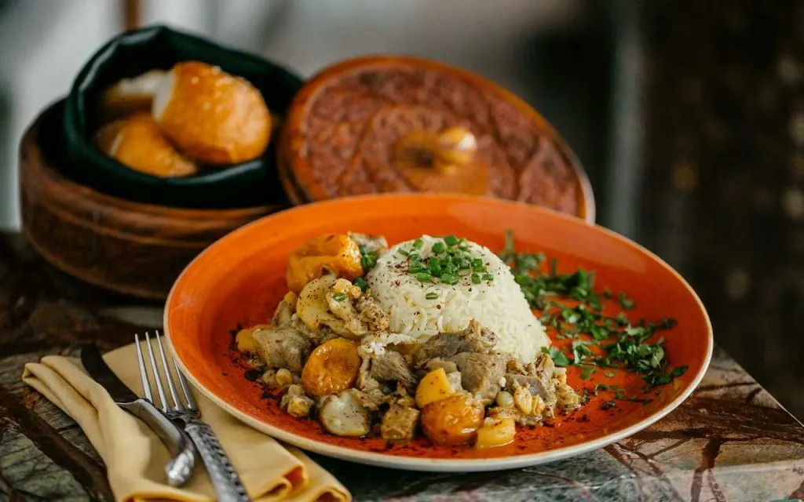
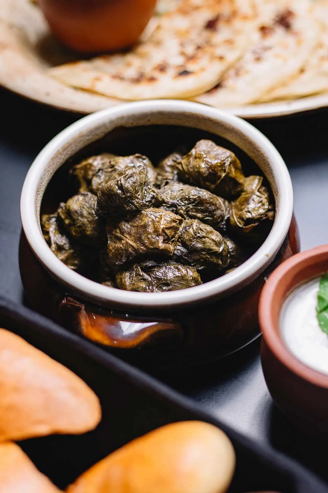
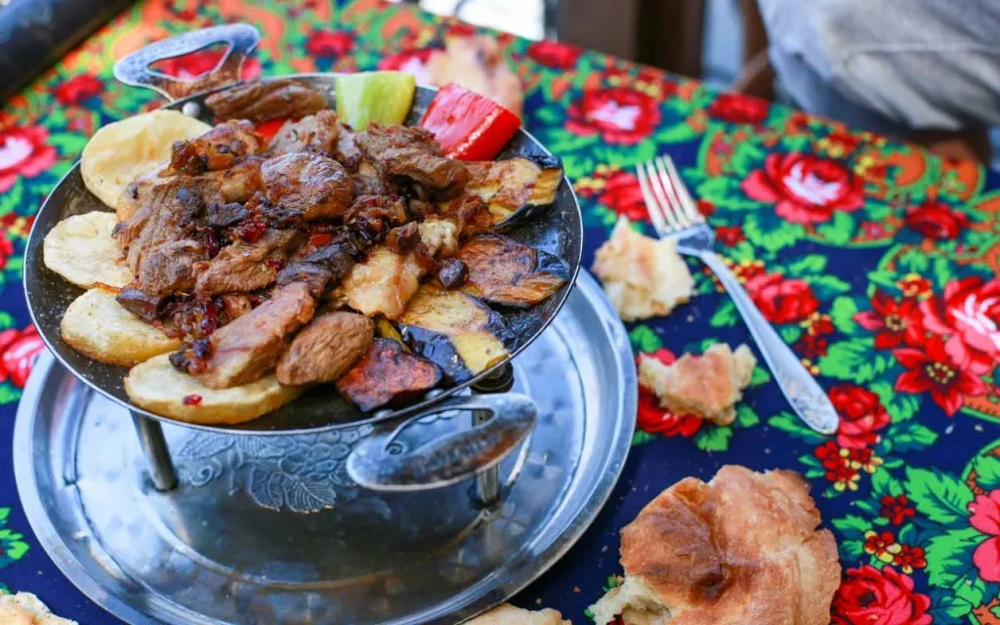
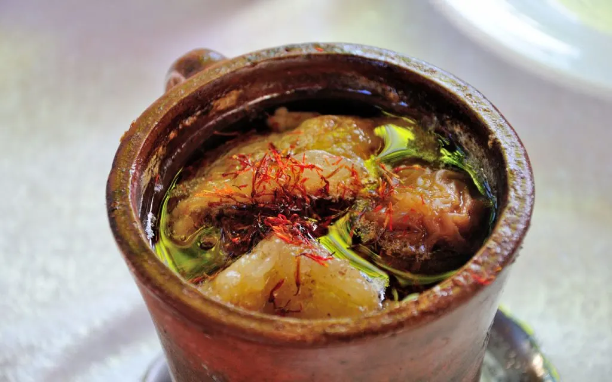
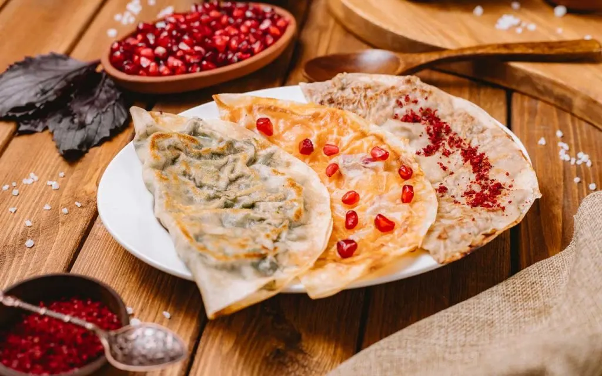
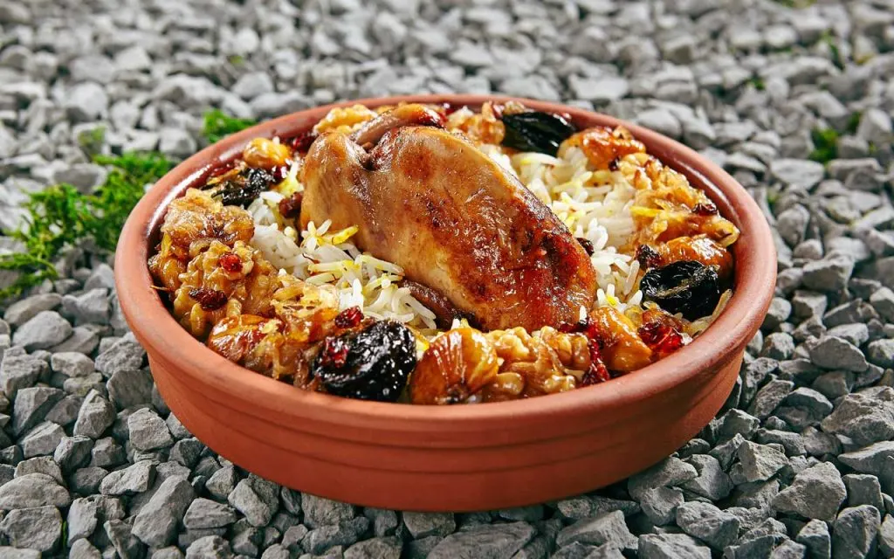
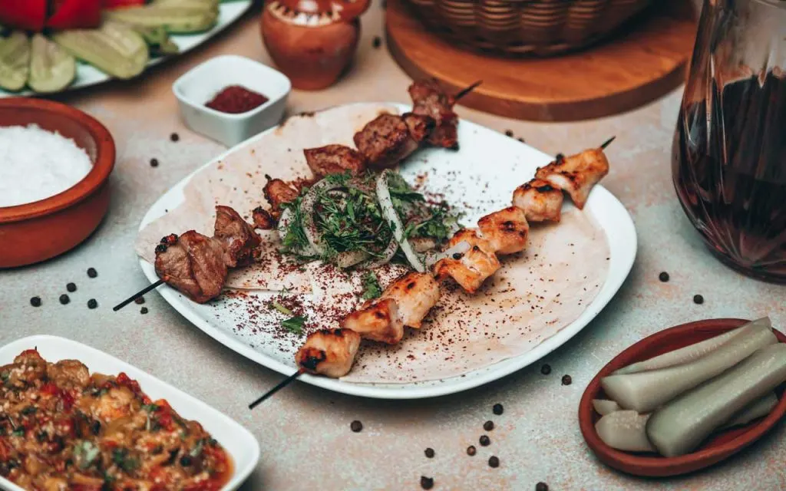
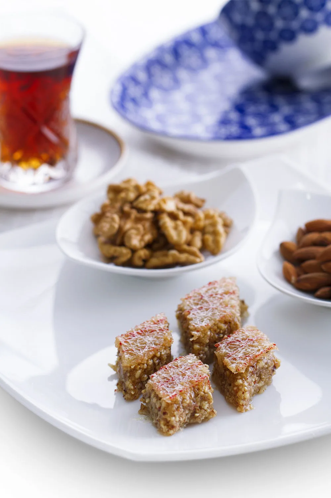
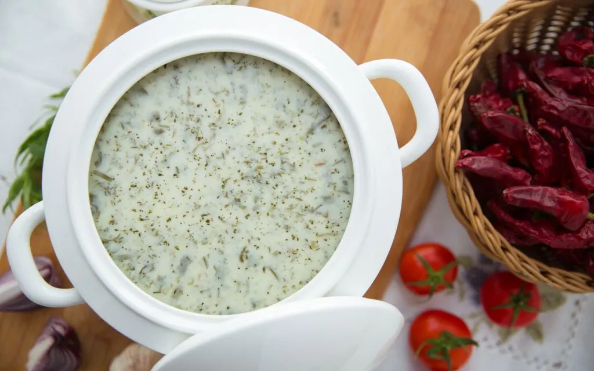
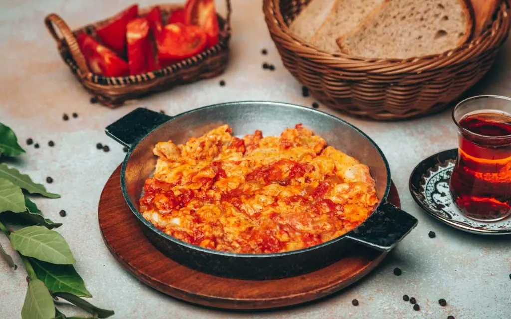

One of the most well-known dishes in Azerbaijan is plov. It can have different names, depending on the main ingredients used. Essentially, plov is a rice-based dish. It can be accompanied by a wide range of delicious foods and combinations. Classic plovs include dried fruit plov, mutton plov with onion, chilov plov (bean plov with fish), chicken plov, and shirin plov (sweet plov).
Dolma is a traditional Azerbaijani dish, which is also popular in Eastern Europe and in Mediterranean cuisine. Essentially, it’s a mixture of meat, onion, rice, peas, and spices, wrapped in grape leaves or stuffed in vegetables such as tomatoes, sweet peppers, or eggplant.
Saj ichi is Azerbaijan’s take on barbecue. Traditionally, lamb is the meat of choice, as it’s been eaten in the country for centuries.
Piti is a liquid sauce made of lamb and chickpeas. It’s made with a slow and unique cooking method, and it has been prepared for generations. The soup has an unusual, distinctive taste. Lamb, chickpeas, and baked chestnuts are the main and irreplaceable ingredients of piti. You can also add vegetables, plum, or quince for taste.
Gutabs are Azerbaijani patty pies. They are stuffed with a variety of greens, vegetables, meat, or cheese. Locals call gutabs ‘Azerbaijanian fast-food’ because they are foods you traditionally buy when you’re on the go.
Lavangi is a fish, duck, or chicken dish, stuffed with walnuts, onions, and various seasonings, which is then baked in the oven. Fish-based lavangi use fresh and delicious kutum, asp, or carp from the Caspian Sea. White fish can also be used, and caviar is a popular filling. Other stuffings include dried cherry-plums, raisins, sour prunes, or “narsharab” (a pomegranate juice syrup), and vegetable oil.
Azerbaijan has many types of kababs and shashliks. Kebabs are made of different kinds of marinated minced or chopped meat, fish, or chicken. Various vegetables are then paired with the succulent chunks of meat, and then all ingredients are threaded onto the skewer. Finally, the kebabs are roasted over an open fire. As a result, Azerbaijini kebabs have a deep, roasted flavor. They are enjoyed with lavash and diced onion. Lule kabab is one of the most popular kebab choices. This minced lamb kebap is mixed with lemon, salt, spices, and herbs.
Sheki pakhlavasy is a famous Azerbaijanian sweet. Sheki is a region of Azerbaijan, and its inhabitants use the same methods to make this delicious treat as they have for generations. This type of pakhlava is made from rice flour and filled with nuts. The dough is prepared in a copper frying pan. Once the dough is heated, it begins to trickle. This trickling creates a web effect, or ‘rishtya’ as the locals call it. Coriander and cardamom are also added to the mixture. Once assembled, the pakhlava is saturated with sugar syrup, leading to a sweet flavor and alluring glaze. Pakhlavasy is a sweet treat that has been prepared for generations. It’s an Azbaijani dessert with so much history, character, and flavor.
Dovga is a traditional Azerbaijanian yogurt soup. It is cooked with a variety of herbs, such as dill and coriander, rice, and chickpeas. It is served hot or cold, depending on season. Dovga is considered both a kind of soup and a drink, and it is commonly eaten or drank with a wide range of mains. In Baku, chefs add small meatballs and chickpeas to Dovga, if served hot, to enhance the flavor and texture.
Many countries have similar dishes with some differences. For example, in Turkish cuisine, they have menemen, in the Mediterranean cuisine, it is shakshuka, and in Azerbaijan, it is pomidor chighirtmasy. Pomidor-yumurta is essentially Azerbaijan’s take on shakshouka. Shakshouka is a delicious egg and tomato dish, popular in North Africa, the former Ottoman region, and the Middle East. Pomidor-yumurta is made by cooking eggs and tomato in a copper pan, with a wide array of aromatic spices. Normally, this delicious dish is prepared for dinner or a light lunch, but often you can see it on the breakfast menu of many traditional restaurants.
